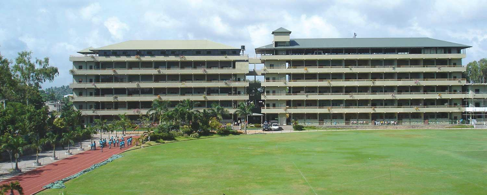
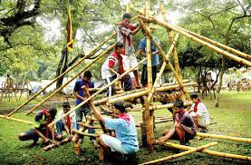
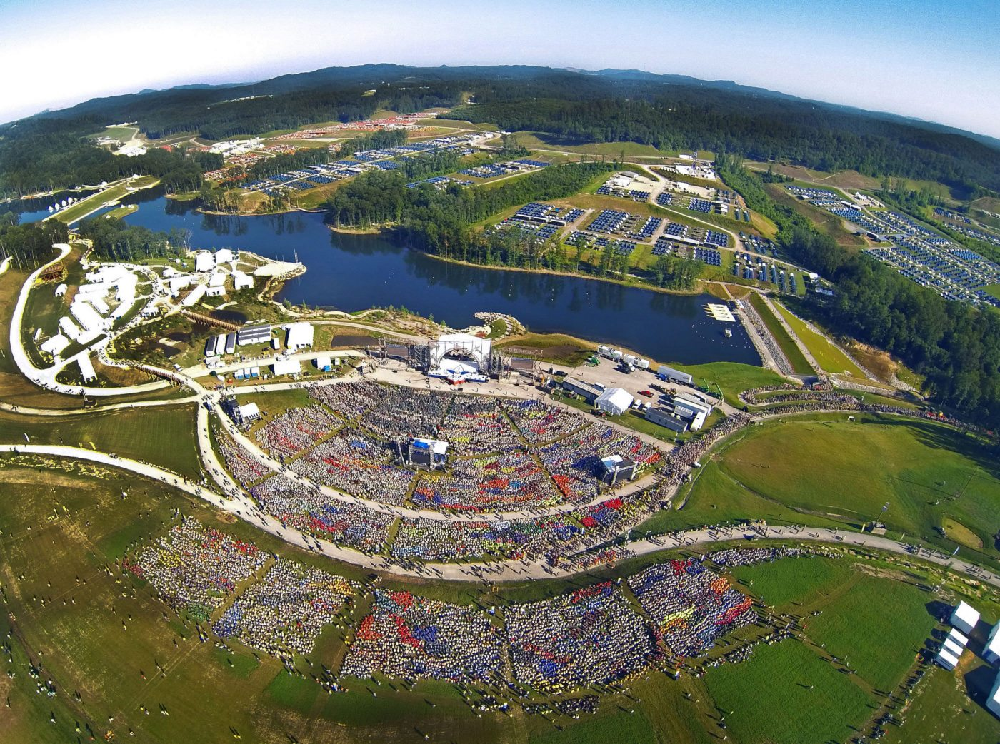

 Hi, My name is Malik Karunanayake I'm a Roman Catholic and I'm 18 years old. I've studied at Lyceum International School - Wattala for my past 12 years, sat for my Ordinary Levels in the Science Stream in 2018 and achieved 3A*s 3As and 1C. In 2020 I sat for my Advanced Levels in the Mathematics Stream and achieved 1A* 2As and 1C.
 I've done many sports including Badminton, Athletics and Swimming but the one I've invested most of my time and continued to was Scouting. Scouting is a very fun and educational sport, and it helps develop physical, intellectual, social, emotional and spiritual aspects of our lives which helps us to become responsible citizens in society. The camping experiences were one of the best because in camps, I learnt how to cook, allocate food, keep ourselves safe from danger at night, find neccessities to build and make a fire, and many other skills that brought our group together.
 I had the opportunity to visit the United States of America in 2019 because of Scouting for the World Scout Jamboree and to have one of the best experiences of my life. It enabled me to create new friendships with scouts from all over the world. About 50,000 scouts from around 170 countries participated in the event. It had many activities ranging from BMX riding and rock climbing to zip lining high up above lakes and shooting pistols, shotguns and rifles etc. The event went on for about a week and even that was not enough to complete all the activities.